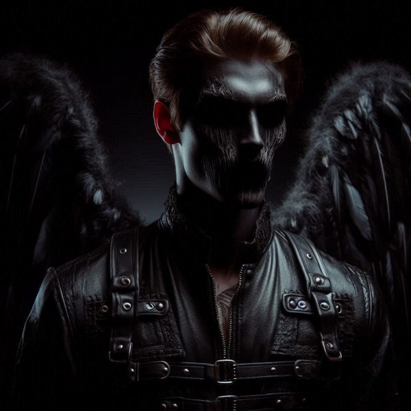

Last Breath

LINK for audio version part 1-3: https://youtu.be/fvetpEfoszY
LINK for audio version part 4-6: https://youtu.be/ez9pCk1SBuQ
PART 1 : 6 month before dying
MARK
April 1st 2024
I am starting this Journal on the 1st of April and what follows here might sound like a joke at first but I’m afraid it’s not.
For whoever discovers this in an old box somewhere and gets through the ordeal of reading it: My name is Mark, I am 50 years old and I have been a hospice worker for the last twenty five years. Being a palliative care professional for such a long time, means that I can be trusted with what I’m about to write down. I know how a dying process works. I’ve seen it over the years hundreds of time, maybe even more.
That being said… I think my wife might be at the start of her life ending journey. There have been signs for the last three weeks. She isn’t eating or drinking as much as before and she is refusing visitors. Her best friend died recently and since then she has kept mostly to herself, usually buried in one of her books or drawing in our art room.
When I first met Leliana, I was young and reckless and to be honest, I wasn’t thinking with my brain. She was the most gorgeous woman I have ever seen in my life, it didn’t even matter that she was much older than me.
At twenty six, I was freshly out of University, full of hopes and dreams for the life ahead. I was working as a nurse at the local hospital in my village and I was enjoying every minute of it, even though there was a lot to do every day. It wasn’t an easy job, that’s for sure. I had to deal with patients suffering from terminal illnesses, homeless people that haven’t had a shower in weeks or months, children with a death certificate already prepared for them and other hard realities of life that nobody likes to talk about.
Leliana was admitted for a broken ankle and as luck came, I was the one to check her chart and do the primary examination before the doctor could see her. I remember her cursing and grunting in pain, her black skirt in disarray, her mascara running down her cheeks. She was a wreck and I was love struck. It happens like that sometimes. I took her details and noted them in my chart, checked her broken ankle and administered some painkillers then I was out. Next day I was off but managed to swap with my friend and ended up going back to work after a 12 hour shift just for a chance to see her again.
And that was it. From that point over I was hers. My heart wouldn’t take no for an answer and every time she drew back or said I am too young for her and way too foolish, I pushed more and more. I was in love. I didn’t care about the fact that she didn’t want any kids, or that she was already fifty four. She looked like she was in her early thirties and a beauty like that doesn’t simply fade away with time. I didn’t once thought about the fact that one day she will die and leave me alone. At twenty six you don’t think about things like that. Death is something so far away in the future that you cannot even take it into consideration when you decide things.
Do I regret it? Of course not. I had a happy life with her. We travelled much, we enjoyed each other’s company every day. We read hundreds of books together and ate thousands of meals at the same table. We made love in our home bed, hotel rooms, cars and other unorthodox places. She made it very clear from the start that she didn’t want any children, biological or adopted. I didn’t care. As long as I had her, nothing mattered. But then she got pregnant, God knows how because she had been already menopausal when I met her. It was… tough. I don’t feel like talking about my dead son so I will skip ahead.
But now that she is slowly melting away and I am left alone… some mornings I do wake up and wish a child would be somewhere out there. A young man or a woman I could call and tell that their mom is nearing her end.
It is illogical to think like that, but as much as I acknowledge it, I still can’t stop my mind from venturing in that area.
This is all I have for today, but I will keep updating this journal with her progress.
I wish so bad I am wrong.
LELIANA
Phoebe died last week and with that the horrible realization that my death is close came too. I can feel my body declining fast. My bones ache, my muscles don’t work like they used to. But the worst part is cakes with fresh fruit taste like cardboard now and that amazing stake Mark cooks makes me want to gag. I can’t eat much and it’s not like I have reserves to spend. I am already skinny. Used to think I was lucky in my youth. Many women wanted a slender figure like mine. Now I look at my arms and my legs and wonder where has the meat gone to?
How much do I have left I wonder? I am already seventy eight. Few fortunate people reach my age. And Mark, God bless him… he is still young. Even younger than I was when I first met him. How time changes a person!
I have warned him about this. I remember talking for hours, debating. I tried breaking up with him multiple times but he has stuck to me like a very strong magnet glued to another one with its opposite pole. He still is I think. That is the saddest part. When I am gone, I fear he might get lost. His heart will hurt. He won’t be able to just leave me in the past and remarry or find another girl to spend the rest of his life. And that hurts the most. I don’t want to leave him alone. It’s not fair. I don’t want him suffering. He doesn’t deserve any of that. All the unconditional love he has given me over the years and I… repay him like this.
But what am I supposed to do? It’s not like I can put a stop to it. Not like I could just ask the reaper to give me a few more years so I can die with Mark when his end finally comes.
I don’t tell him any of this. I don’t want him to carry my fears and my worries too on top of what he is already carrying. I keep these to myself.
I also didn’t tell him about the dream I had last night. He would send me to the psychiatrist. As much as I want to share this with him, he is and always will be a man of science. He never believed in anything that couldn’t be proved by hard facts. He wouldn’t understand.
How could he? Maybe he will when the angel will visit him too in his older days.
It was… magnificent. Its wings, the while light. The way he sang when he was speaking. Telling me not to fear, that I still have some life left but when the end finally catches up with me, he’ll be waiting to embrace me.
I felt… peaceful.
But as soon as he left I started thinking about Mark. I am not ready to go. Not ready to leave him yet. Please, God, give me a few more years.
PART 2 : 3 months before dying
MARK
June 5th 2024
I am now sure Leliana is approaching her final days. There is no hope left. All the signs are here.
Last night she went to bed at 6 PM and woke up only at 10 AM this morning. I helped her to the toilet and then fed her some yogurt, after which she went back to sleep. It is now 12 PM and she is still in bed.
I fear for my sanity. I’ve watched hundreds of people going through their last months, days, taking their final breath. It’s something I am used to seeing and still… when it comes to her it’s like I am witnessing it for the first time. There is nothing I can do to stop the process or to at least slow it down. And to what end anyway? Death eventually comes for us all.
She can still speak, but words seem to come harder to her. Sometimes, she doesn’t make any sense.
Yesterday she told me she wished Max would be here. Hearing her say that hurt. I remember her getting pregnant and telling me that she is going for an abortion. I remember her crying, her fear. I was there for all of it. I wanted the child but knew better than to ask her to keep it. And still… when she came out of the doctor’s office, she gave me the vitamin prescription and said she couldn’t do it. She couldn’t get rid of this baby.
I’m thinking now…. Something I thought about many times before actually. Wouldn’t it have been better if Max would simply not been born? If she had decided to go with the abortion, all the pain that came after would have been avoided.
It would have been better to deal with the loss of an unwanted pregnancy where the baby is only a fetus, a genderless gathering of cells that can be scraped off, rather than to have to live through you son’s birth, hold him in your arms, hear him cry and see his body writhing in pain and then watch his chest rise and fall for the last time until stillness engulfs him.
Max’s death shook us to the core. It didn’t wreck our marriage like it sometimes happens with couples that go through the loss of their child. But the agony that came with it lingered for many years and I think Leliana still hurts sometimes – even now – when she thinks about how our lives could have been with a child in it.
LELIANA
I feel so tired all the time. My body doesn’t listen to me anymore. I keep telling myself to go to bed like a normal person at nine or ten in the evening and wake up early to make breakfast. I haven’t done that for Mark in such a long time! I remember when we were young and beautiful, his face still missing that certain maturity that comes to men in their forties. He looked like he was barely out of his teenager years. Sometimes I felt bad, like I was draining his youth, spending his best years for selfish reasons. I had to remind myself that he chose this, he chose me, and that our love was true and unavoidable. He could have left me at the first signs of old age. When my skin started to crinkle, my breasts started sagging and my abdomen got round. But he stayed with me in spite of all that. Which makes me believe that his love was true. Unconditional. The best kind that you can rarely find. How was I so damned lucky?
I used to wake up at six in the morning to make coffee and breakfast for both of us. But mostly to look at that face, his hair ruffled, the pillow underneath his head a mess from all his tossing and turning. He has always been a restless sleeper. Now he sleeps in the other room because he says he wants me to rest. I have told him a hundred times I don’t care how much he moves in his sleep. I want him next to me. I sleep too much anyway, but still every night his body slumps in the other room, our doors opened so he can hear me if I need anything.
Truth is… I think he is scared I might die next to him in the same bed.
And then there is Max. I wanted to tell Mark about our son’s presence, but I fear he is not ready to hear it. I tested him, saying how I wish Max would be here and I could see the shadow pass over his face. His eyebrows slightly curled and he had left the room without saying anything. I think he still hurts from our loss, even after so many years.
The angel still visits me from time to time and sometimes he lets me feel Max. When I lay in bed, he sits next to me, his hand over mine, a cold touch. He says my son is at rest, peaceful and that if I want, he could bring him here for me too see one more time. And I want that so bad, but I feel like I am not ready for the visit yet. Would I see a baby or a grown up man? Or just… light? I am so confused. I haven’t answered the angel’s question but I think I’ll have to soon, before he changes his mind.
PART 3: TRANSITIONING ( 1 month before dying)
MARK
August 12th 2024
Last two weeks have been very hard. I had to employ a nurse to come and sit with Leliana when I am not around. As much as I want to be with her all the time, I still need to eat, shower and do some shopping from time to time and she needs constant supervision now. She cannot walk to the bathroom anymore so she has to wear diapers. She is barely eating anything, can go days without any real food, just sips of juice and a few spoons of yogurt.
She sleeps most of the day, but sometimes in her awake moments I read her stories and she talks to me about angels and Max. I don’t get upset anymore whenever she brings up our son. I was a fool. How could I let that hurt me when the woman I love is dying before my eyes, her mind barely holding on to pieces of happy memories that include our lost child?
Yesterday after dinner (two spoons of soup and a sip of water) I read her one of King’s short stories. We have all of his books in the library and I remember how much she loved reading them over and over again. Leliana is a fan of horror and fantasy. So many hours spent on her reading chair with her nose buried in a book. So I make sure she gets a story every single night before turning off the lights. Sometimes she drifts away before I am finished and then I have to place my hand onto her chest for a few minutes. Her breathing is shallow but I can still feel her chest rising in rhythm for now. I have no idea how much she has left, nobody can predict this, but I am fairly certain she is very close to her last breath.
When I was finished reading, she looked up at me and said: ‘Mark, I know you don’t believe me, but Max is behind you and he looks happy. His hand is on your shoulder.’
I didn’t know how to react to this. Visioning is something that I’ve seen happening with my patients many times, but when she talked abut Max as if he was in the room, it still took me by surprise. I blinked and managed to plaster a smile on my face. ‘He is here because he loves you’, I mumbled. Not sure what made me say that, but I could see the words had a positive effect on her.
‘Mark… Max says I need to decide.’
‘Decide what?’ I asked.
‘If I want to go with him or with the angel.’
‘The angel?’
‘Yes. He is here too. In that corner.’ She pointed somewhere to the right. I looked towards what she was looking at more as a reflex, not because I thought something really was there. But when my head snapped back to her, I had a shock.
Her mouth was open, her eyes were starring at nothing and there was a drip of saliva on her chin. I went for the tissue when she grabbed my hand and screamed. I almost dropped the tissue on her face. I caressed her cheek with my free hand and tried to say ‘You’re safe, Leliana.’ But she was screaming too loud.
I am not even sure how she had that strength in her lungs. The grip on my wrist was unexpected too. She shouldn’t have been so strong.
‘LELIANA!’ I shouted, not knowing what else to do.
She stopped, rolled her eyes towards at me and grinned.
‘You’re… safe, love.’ I managed to say. Although the look on her face was so terrible I wished she would go back to screaming.
She stared at me with that awful mask on her face for what seemed like eternity and then she dropped my wrist, let her head flop to the side and her eyes took back that glassy look she has whenever she is not aware of her surroundings.
I am now in bed, thinking back to all of that and I can’t shake off the feeling that something is wrong with her. Something worse than dying.
LELIANA
My mind is still my own, but sometimes my eyes can’t focus and I loose perception. I can’t seem to look at Mark or Ruby without a blurring vision around them. The lovely nurse with soft hands is so young. I miss those days when my skin was smooth as hers and I could run and dance without any single care in the world. Oh, how short our lives are.
I fear my end is near and unavoidable. I can feel my body expiring, but my thoughts are still sharp. I know my husband thinks I am loosing it because I keep seeing Max, and truth is I am questioning my sanity at times. But whenever he is here, all those doubts vanish, replaced by joy. I am grateful to whatever deity is up there that allows me to see how my son has grown up, to witness how at peace he is, to hope for being reunited with him eventually.
Mark is reading me Rattlesnakes, and I enjoy hearing his soothing voice. I’m trying as hard as I can to keep my eyes open, at least until he is finished, but it’s getting harder and harder.
I can see the Angel in the corner. These days he is always around, as if expecting me to die any minute. He says I’m going to be embraced by him when the time comes, but lately I’ve started to have doubts about him. I don’t want to go with him. There is the absence of his face that turns me fearful. His whole body looks human, besides the wings that he keeps tucked at its back, his blond hair long and tied in a low ponytail, the halo giving off light around his head. But he has no features. There are no eyes, nose or mouth. Where those should have been, there is only smooth surface, like an egg with skin instead of shell. Whenever he comes close to me, I flinch. Or at least I try to. My body doesn’t respond to my commands anymore. Not fully.
Mark has finished the story. And here is Max behind his dad, a smile on his face. He says I need to decide. He always says this. He also says I need to hurry with my decision. I wonder why is that. I tell my husband all of this even though I know he doesn’t believe any of it. I even show him the corner where the Angel resides.
The Angel.
He is not faceless anymore.
My mouth opens and I scream. I can’t control my vocal cords. I can’t stop.
The angel’s black holes stare at me, his mouth full of sharp teeth smiles and his tongue dances around his chin, elongating until it touches his neck. Mark tries to wipe away at my face and I grip his hand trying to tell him about the monster. To warn him.
Then the Angel is on top of me.
He is sitting on my chest and it’s hard to breathe. My mouth is still open, my voice piercing.
His tongue invades my mouth and I feel like I’m choking but at least the screaming has stopped. I can’t move, my body goes limp and I drop Mark’s hand.
There is darkness eating away, devouring every inch of my meat from the inside and all I can do is endure.
There is a sharp pain in my chest and then… nothing. It’s like whatever presence was inside me simply disappeared.
My head flops to the side in exhaustion. I think all of that took a toll on my already spent body. I open my mouth to say something to Mark, but nothing comes out. My body is completely out and there is nothing I can do about it.
But the terror is still here with me, in my mind, eating away at my sane thoughts. I can’t even lift my head to check if Max is still around.
I think I’m going to sleep now.
MARK
August 30th 2024
Leliana got out of bed before me. When I woke up at 7 AM and checked the time, I got the biggest fright of my life. I thought she had died during the night while I was sleeping late. Ruby had been with her in the room of course and I knew that if anything had happened, she would have called me right away. Still, any logical thoughts perished from my mind when I looked at the clock and realized how much I’ve slept. It has been a while since I managed to do this and my body felt good. Energized.
I ran to her room immediately, not even bothered to put my slippers on and when I got there I had another shock seeing her bed empty, the sheets and the duvet on the ground. For a split second the thought of my wife dead and already discarded from her bed came rushing back in, but I shook it off. That would have been impossible.
So I went downstairs, following the smell of pancakes from the kitchen and sure enough at the table I could see Leliana wearing one of her dresses, the material too loose on her thin form. She was smiling. I barely managed to open my mouth and say:
‘Love?’
‘Hey, Mark. Ruby is making pancakes. Isn’t that wonderful? She also helped me put this dress on. I know I am not beautiful anymore, but I wanted to do this for you nevertheless. You’ve been so kind to me.’
I dropped to my knees next to her chair and put my hands around her frail waist, letting my head fall onto her lap. She smelled like soap. Seemed like Ruby helped her wash too.
Didn’t even realize I was crying when I lifted my head and watched the nurse flop the last pancake on the already filled plate on the table. Her face was solemn, a contrast to my wife’s and I finally realized what was happening.
Leliana was in her terminal lucidity phase.
I hugged her again, this time letting the tears flow in a cascade.
I’ve seen this thousand of times. People getting better for a day or two right before their death. Families getting their hopes up in spite of all the doctors and palliative workers explaining the situation.
I wasn’t hopeful. I knew these moments were our last together. I had to make the best of them.
So I wiped my eyes, sat at the table and shoved spoonfuls of pancakes in my mouth while my wife was watching me, smiling and sipping gingerly at her tea. Of course she couldn’t eat. Her body didn’t need the nourishment anymore.
Her body was dying.
Soon.
LELIANA
I had a good day today.
When I opened my eyes this morning, the stench of the room and the absence of the light made me uneasy. So I asked Ruby to open the curtains and the windows and help me wash a little bit. I wanted the bedsheets clean too.
I chose one of the dresses from the wardrobe and put it on. It felt so good to wear something else than loose pyjamas. And my hair was soft again. I threaded my fingers through it but almost cried when I realized I only had a few strands left. I remember my full locks. I used to be so proud of my hair. They say a woman’s beauty comes first and foremost from her hair. And they are right.
Ruby offered to make pancakes and I said yes. I am not hungry, but I know Mark loves them and I want him to be happy with me today. It’s too early to say but… I think I am getting better.
There is no Angel in sight. Sadly, no Max either, but I know he is there somewhere and when the time comes, I will choose him. I will go with him.
My body is still weak, but with a little care and patience I should get back to my normal energy levels in a few days. I feel like I can do it.
Besides, I just realized I need to check my secret stash and see if my antique jewellery is still there. I don’t have any children to give them my precious bundle too, but I know Mark has a niece in Germany. I want him to send her the box. They are valuable but more than that they are history. And they are beautiful. Maybe the girl will keep some of the pieces for herself and wear them someday.
I am not going out to parties anymore. I won’t be needing them.
But I will take these days I have been gifted and live them fully. I will stay with Mark and listen to him talk. I will hug him and hold his hand. I’ll put my hand on his chest and inhale his scent. I want to feel him as much as I can.
I love him with all my heart and I want to thank him for all he has ever done for me. For all the unconditional love, trust and loyalty he has given me his entire life.
The Angel can go fuck himself for now. I still have life to live.
PART 4 Active dying stage
MARK
September 1st 2024
Nobody should go through the death of a loved one without knowing exactly what that entitles. How lucky am I to understand that what is happening right now to my love is completely normal! I know she’s not in any pain, physically or emotionally. She isn’t even lucid anymore. I know that everything happening to her body right now follows natural progression. It’s a process that allows the body to turn off peacefully. I’ve seen it so many times.
But if I hadn’t been a palliative worker, I would have been frightened. Maybe I would have thought she might be hurt. Painfully aware of her rasping, her inability to eat or drink anything at all, unconscious for the last two days, her skin changing shades every hour. And her touch… it’s terrible to feel her hand warm like she has a fever one minute and then ice cold the next one.
The worst part though is the death rattle. Those gurgling sounds every dying person makes when approaching their last breath. I can hear them now from the other room. The sound is a result of fluids accumulating in her upper chest and throat. She is unable to swallow or cough anymore so the secretions pile up there. Every breath she takes goes through these and comes out like a rattle of some sorts.
I can’t see her like this.
Even if I completely understand the process, it’s still hard to witness her floating away.
Dying.
LELIANA
The Angel is here again. His faceless head tilts sometimes at me. Max hasn’t come yet. I want to go with him. Where is my son?
I can’t breathe.
It hurts.
My mind is still working, but my body stinks of decay.
If I am dying, why am I so… aware of it?
Where is Max?
The Angel stretches his face and in the middle of that nothingness a hole rips.
I am scared.
Mark, help me, love.
The Angel is at the foot of my bed. His hands dangle by his sides, his mouth now bigger, putrid stench coming out of it. Mark seems completely unaware of this. He sits on his chair and holds my hand. I can feel his warm skin. He is not saying anything, but deep sobs escape his chest from time to time.
Why isn’t he helping me?
The Angel climbs on top once again, his legs straddling my hips.
I want to scream, but my body does not react.
Mark let’s go of my hand.
NO!
I don’t want to be alone!
The Angel’s hands come crashing down on my chest. He is pushing. I feel like I’m sinking into the mattress. The weight is crushing.
I am dying.
Max.
I want my baby.
Please. Just one more time to hold him.
Please.
I can’t breathe.
PART 5 Moment of death
MARK
September 2nd 2024
It’s done. She has passed.
Leliana is no more.
I don’t know if I have the strength to write all of this down. But… I need to let go of this awful feeling that I have.
This horrible sensation that something terrible has happened.
I have been with patients dying so many times before. I am not easily affected. People live and people die. And if they manage to reach an old age and the process comes naturally to them, I consider it a blessing. So many others don’t get that chance. Countless of young people dying in hospitals, on roads as a result of accident. Thousands of children perishing from incurable illnesses, from negligence, from unknown reasons. Like Max.
So when an old person finally reaches their final days, it’s a blessing. All those years lived, all those memories left behind. Their legacy doesn’t die with them. It lives on inside the people that love them.
So why is it that this morning felt like Leliana’s passing wasn’t peaceful?
Why do I have this tight sensation in my stomach that whatever happened in her final moments was anything but a blessing? What if it was like she slipped into a nightmare from which she will never wake up again?
The signs of her passing were all there. All normal.
Her breath was not rhythmic. She would take one inhale and then I would hear nothing for a few good seconds. Then she would take another one. And with each, my own breathing slowed, waiting. I didn’t know which one would be her final one.
Then… it happened. She took a deep breath in and on her exhale I thought… God, sounds ridiculous to even write it here in my journal. But I could swear I heard her say ‘help’. Which is impossible. She hasn’t been aware of anybody or her surroundings for quite some time now. She would have been incapable of any type of speech at this point.
I didn’t have time to think this through as her face suddenly relaxed, her jaw fell and her eyelids remained slightly open. It was the end.
Her final breath.
And I could swear… with it she had asked for help.
LELIANA
The Angel ripped off my clothes and violated me with its long fingers. It pushed them inside without mercy until I felt the flesh ripping and agonizing pain flooded my senses. And while my body didn’t move and my mouth didn’t make one sound, I screamed and trashed inside my mind as hard as I could. It ignored me and placed its other hand on my face, its nails growing until they reached my nostrils, my ears and my eyes. And then he pushed his fingers into them without mercy. I felt my eyeballs pop, liquid coming down my cheeks. My ears bled and I was left without sight or hearing, while its fingers kept pushing through my insides down below, ripping through my uterus. Its other hand was still going deep, nails digging into my aware brain.
I thought my vocal cords would rip from the intensity of the screaming, but that was not possible for I was only making those sounds in my mind while my body stayed unresponsive.
After a while… it was done.
There is darkness all around me now, engulfing and unforgiving. The only thing I was allowed to keep is my thoughts. They still rush around my mind, unbroken, free, while my body is a husk, a carcass of what had been once a woman.
…
Max.
…
I would give anything to see my child one more time. To embrace him. To tell him he is loved.
I would let the Angel torture me again if I could get one more moment with Max.
Where is my baby?
…
Help.
PART 6 – After death
LELIANA
I open my eyes to the nothingness around me. There is a baby crying, I can hear it now. I wonder how is that possible since the Angel took my senses.
But there is no mistaking the sound. Somewhere, really close, a baby needs me.
I try to walk but there is no ground underneath my feet, there is no space around me. I can’t place myself anywhere. It’s like I don’t have a body anymore.
The baby starts wailing harder and I force myself to think. I need a solution. If I can understand what I am hearing, then surely I can do something about it.
There is a stench now around me. A decaying aroma. Putrid. Disgusting.
Where am I?
The baby still cries and I am unable to help it.
But my eyes… they adjust to the darkness. I can see the rest of my body, but it’s like I’m looking through a foggy glass.
Something tickles my cheek.
My body… I’m wearing a white dress. But it’s dirty. And my skin… it’s wrinkled.
That baby. I… need to help it. I had a baby. What was his name?
The stench is getting unbearable.
I need to move.
My eyes clear a little bit more.
Oh, God.
My body….
No.
Worms.
Eating away.
The stench…. It’s coming from me.
From my rotting corpse.
Where am I?
My baby!
Where is my baby?
Ahhh….
MARK
20th November 2024
Today I left flowers at Leliana’s grave.
There was a mother with a screaming baby visiting the next grave. We talked. She had lost her husband to cancer a year ago.
She was beautiful. Reminded me of my wife when she was young.
Is it wrong to say I find another woman beautiful?
I could never love another one, not like I did before. But… I must find the strength to move on and live the rest of my days as happy as I can, now that my wife is at peace.
THE END
Comments